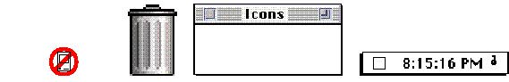

|
Use a Consistent Light SourceOn the Macintosh screen the light source always comes from the upper-left corner of the screen. Therefore icons and other elements have drop shadows on the lower-right side. Use the light source consistently, so that shading is consistent throughout the interface. Figure 8-13 shows some desktop entities that have drop shadows consistent with a light source at the upper-left corner of the screen.Figure 8-13 A consistent light source Figure 8-14 shows some desktop images that have different light sources and inconsistent drop shadows. Figure 8-14 Inconsistent light sources  |